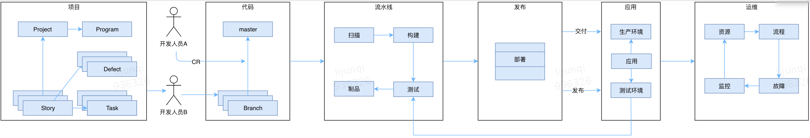
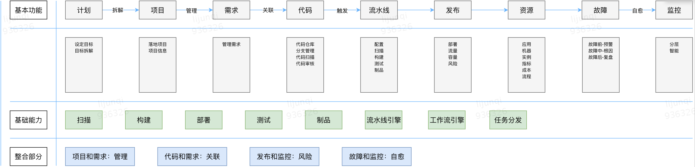

一站式研发管理平台思考
研发效能
精细化管理
研发中台
一站式全景图
 
一站式分享计划
希望能够把这几年的思考，通过博客的形式分享出来
一站式研发管理平台业界调研
业内主要的公司都对这个领域展开了 一些对外的共有产品
阿里 云效
微软 Azure DevOps
腾讯 TAPD
同时各大公司也在企业内部建设相关的平台。
一些基本概念
在开始之前，需要先介绍一些基本的概念，包括但不限于：持续集成、持续交付、持续部署、DevOps、敏捷、瀑布、项目管理等
一站式研发管理平台平台搭建
主要介绍用现有的工具怎么在企业内构建一站式研发管理平台
在这里借助一些市场可以使用到的工具与开源软件，结合简单的二次开发进行一站式管理平台搭建。这些工具包括但不限于：Jira、Jenkins、Gitlab、Sonar、Coverity、Docker、Kubernetes、GoCD、Spinnaker等
一站式研发管理平台企业自研
主要介绍企业自研一站式研发管理平台的实践与踩过的坑
一站式研发管理平台发展趋势
构建一站式企业研发管理平台，终极目的是为了提升企业协作效率，降低企业管理成本。这部分主要介绍相关领域的发展。